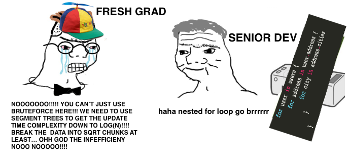

class: center, middle # We need to go faster A communication from the native world to the Web Audio community Paul Adenot, <span class="logo">mozilla</span> 7<sup>th</sup> Web Audio Conference 2022, Cannes, France --- class: center, middle ## Not a "this year in Web Audio" this time around (although I hear there are news on that tomorrow just before lunch and there is one (1) new API I'm talking about here, can't help it sorry) --- class: center, middle # <strike>Doing more with less The Zen of high performance real-time programming</strike> Paul Adenot, <span class="logo">mozilla</span> 7<sup>th</sup> Web Audio Conference 2022, Cannes, France --- class: center, middle # <strike>27 weird tricks to improve your audio code! The 19th will surprise you!</strike> Paul Adenot, <span class="logo">mozilla</span> 7<sup>th</sup> Web Audio Conference 2022, Cannes, France --- class: center, middle # Real-time audio programming is demanding to the programmer and the machine The maths are complex, programming is often low-level, real-time programming has lots of constraints, latencies are increasingly small --- class: center, middle # On the web, you don't know what the machine running your code is capable of Is it a $50 smartphone, is it a $5000 MacBook Pro M1 Max, what else is running on the machine, what browser does the user run, what OS and OS version is the user running, is the GPU using shared memory, what audio output and input devices are hooked up to the device, is your DSP code running on an efficient core or a powerful core, what frequency stepping is the CPU running at right now, is the battery under 15%, is the computer plugged in, is the CPU thermal throttling ? --- class: center, middle # The amount of unknowns in a space that requires determinism is rather problematic --- class: center, middle # We've had those problems in native for years, time to applies some classic solutions to the Web --- # From dog slow code <img src=/flitwick-slow.jpg style="max-width: 95%"> --- # To dog fast (!?) code <img src=/flitwick-fast.jpg style="max-width: 95%"> --- # Agenda ## First, cajole the CPU ## Then, always be good friends with the memory ## Do a hug to the scheduler ## ... but in the end, always verify --- class: middle, center # Cajole the CPU --- # CPUs are complex beasts CPUs are really impressive these days, but some work is needed by the programmer to reach high efficiency. > The best optimization one can implement is always not to do the thing one > thought they needed to do. Out of order execution, prefetching, superscalar pipelining, power management, multi-cores, hyperthreading, branch prediction, register renaming, speculative execution... --- class: center, middle # Implement your DSP using Web Assembly, minimize JS⇔WASM roundtrips If there is only one slide to remember... <https://hacks.mozilla.org/2018/10/calls-between-javascript-and-webassembly-are-finally-fast-🎉> <img src=/wasm-calls.png style="max-width: 25%; display: block; margin: 0 auto;"> --- # Why not JavaScript for DSP - C++/Rust/... is more ergonomic for DSP - Lots of high-quality reusable DSP code in native - No risk of Garbage Collection - Better control on memory layout - It _really_ is faster - Modern optimizing compilers are amazing - Unlocks the door to SIMD programming - Compiled Ahead-of-time and not Just-in-Time in tiers (always fast) - Predictable performance accross browsers --- # Somewhat recent WASM features - Relaxed SIMD, allowing non-determinist maths (nice for audio programming), pre-condition for an FMA instruction - Shared WASM memory - `wasm64` to have a heap bigger than 2<sup>32</sup> bytes --- # Caching computations vs. recomputing This needs to be measured each time: memory accesses are slow, but sometimes the cached result is very slow to compute. --- # Cheating is OK - How much resolution/precision do you need ? - Hybrid lookup table + interpolation ? - What is the input domain of your trigonometry functions anyways ? - <https://www.desmos.com/calculator/ysxm90ydho>, 3.2 times faster than _sin(x)_ --- class: middle, center # Be good friends with the memory --- # Memory accesses often (but not always) dominate Fetching a **single** byte from memory is about 400 times slower than doing an addition. But you can't fetch a single byte, you can only fetch a complete line: pack your stuff neatly. CPU have caches, but caches are small, it best to fully utilize them. The bigger the cache size the slowest it is. Cache are organized in lines (64 bytes on x86 and regular ARM, 128 bytes on Apple Silicon) --- # To put things in perspective (Typical numbers on x86/DDR4) <table> <thead> <tr> <td>What</td><td>How long</td><td>Scaled</td> </tr> </thead> <tr><td> 3GHz CPU cycle </td><td> 0.3 ns </td><td> 1 s </td> </tr> <tr><td> L1 cache access (64kB) </td><td> 0.5 ns </td><td> ≈ 2 s </td> </tr> <tr><td> L2 cache access (256kB) </td><td> 2.8 ns </td><td> ≈ 9 s </td> </tr> <tr><td> L3 cache access (16MB, shared) </td><td> 12.9 ns </td><td> ≈ 43 s </td> </tr> <tr><td> Main memory access (shared) </td><td> 120 ns </td><td> ≈ 6 min </td> </tr> </table> [Admiral Grace Hopper Explains the Nanosecond](https://www.youtube.com/watch?v=9eyFDBPk4Yw) --- # Sequential and temporal locality Things that are accessed together should be together in memory: - filter coefficients - other algorithm state - planar vs. interleaved audio - multi-channel processing - **You name it, it's all memory!** --- # KISS **Always use arrays, never ever a linked list or anything else fancy\*, keep it simple and stupid most of the time.** <small> \* applies almost always, you will know when not to respect this rule, terms and condition apply. </small>  --- # Reduce working set size - Caches have a finite size - The faster they are, the smaller they are - You really really _really_ want to maximize their utilization - Don't waste memory, choose the right types, pack your structs [The Lost Art of Structure Packing](http://www.catb.org/esr/structure-packing/) --- # Speed of memory copies Rule of thumb on x86, DDR4: roughly 1ms per megabyte when caches aren't hot (often when fetching audio assets), for multi-megabyte copies. Obscenely fast on Apple Silicon compared to x86, still very slow. It trash caches, schedule copies in a smart way. Stagger/delay memory copies if they are really needed, but not right now. ⚠️ shared memory with the GPU ! --- # Pay attention to the big picture Heavy memory operations on the device slow down **everything**, the memory bus is a shared resources. The GPU frequently shares the memory with the CPU, and has high bandwidth requirements. --- class: middle, center # Hug the scheduler --- class: middle, center # Scheduling <big>In real-time programming, it doesn't matter if it's fast or slow, it needs to finish <strong>before the deadline</strong>.</big> --- # Communication Try to limit `postMessage(...)` usage while audio is rendering, it _really_ matters. Shameless plug for [`ringbuf.js`](https://github.com/padenot/ringbuf.js), the simple single-consumer / single-producer ring buffer for JavaScript that solves all your problems™. It's only an `npm install` and a couple HTTP headers away! <https://blog.paul.cx/post/a-wait-free-spsc-ringbuffer-for-the-web/#benchmarks> --- # What to avoid in JS glue A bit of JavaScript glue code is, for now, unavoidable. Avoid anything that can GC and any fancy construct and it will be mostly OK, just KISS, no framework, no nothing. [Eye-opening (at least to me) for-loop style benchmark](forloops.html) Don't drop references if you can help it. It's _probably_ not the end of the world, modern garbage collectors are really good, it's always better if they don't run. --- # Increase latency to increase throughput Not all applications need the smallest audio latency Increase the output latency, get free performance gains (caches!) ```js (new AudioContext({latencyHint: "playback"})).outputLatency ``` 72ms ```js (new AudioContext({latencyHint: "interactive"})).outputLatency ``` 32ms --- class: center, middle # ... but always verify --- # You can't say you've optimized if you haven't measured Modern systems are too complex to reason about, measuring is the only way to be sure. It turns out it's also _extremely_ easy. Stop guessing, start measuring! --- # A quick demo, profiling a Web Audio API application <https://paul.cx/public/karplus-stress-tester/> Coming: source mapping of C++/Rust/whatever directly in the profiler <https://github.com/padenot/fx-profiler-audio-cb> <https://blog.paul.cx/post/profiling-firefox-real-time-media-workloads/> --- # Reasonning about optimizations, the percentage reduction gotcha <https://gist.github.com/mstange/775163e54607790d381f0fa63a18d5b8> --- # The AudioRenderCapacity API Allows run time measurements, to e.g. back-off processing to something lighter on some devices. <https://webaudio.github.io/web-audio-api/#audiorendercapacity> --- class: small # Thanks ! <dl> <dt> Slides </dt> <dd> <a href="https://padenot.github.io/wac-22/keynote">https://padenot.github.io/wac-22/keynote</a><br> </dd> <dt>Email</dt> <dd><a href="mailto:padenot@mozilla.com"><code>padenot@mozilla.com</code></a></dd> <dt>Twitter</dt> <dd><a href="https://twitter.com/padenot">@padenot</a></dd> <dt>Credits</dt> <dd><a href=https://www.reddit.com/r/ProgrammerHumor/comments/fokc7r/brrrrrrr/>Nested for loop goes brrrrrr</a></dd> <dt>Dog</dt> <dd>A good boy called Flitwick</dd> </dl>